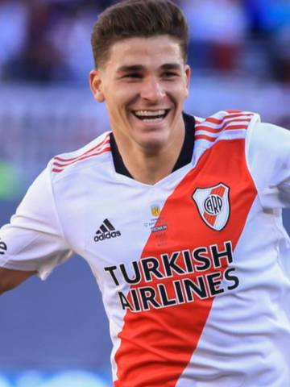

El SUPERCLASICO FUE PARA EL MILLONARIO Y LLEGA A LA PUNTA SOLO

No fue un campeonato, no. Pero los jugadores, un Gallardo con los ojos vidriosos y los hinchas, unos saltando en la tierra y los otros delirando en el cielo, lo festejaron como si lo hubiera sido. El equipo (de un) chico fue River. De un chico que se recibió de grande jugando el partido soñado. Porque Julián Álvarez, talento precoz que a los 18 había asomado su desfachatez en la final de Madrid, tres años después rindió la última materia para diplomarse de crack. Y para hacer que el quinto River-Boca del 2021 se haya ganado un lugar en la memoria colectiva de los hinchas millonarios como el superclásico de Julián. Un partido que se quebró en un minuto. Entre los 14 y los 15 del primer tiempo, cuando dos patadas a destiempo de un Rojo que se había empecinado en copar la parada derivaron en un cartón del color de su apellido. No alcanzó ese cuarto de hora para comprobar si el equipo de Ba-ttaglia iba a adoptar una postura más protagónica que sus pragmáticos antecesores. Sobraron los 75 restantes, eso sí, para advertir una apabullante superioridad de River. Que no sólo le ganó a Boca por primera vez en el Monumental en el ciclo Gallardo por ligas locales, le quitó el invicto al flamante entrenador rival, se acomodó la chapa de candidato que ya traía y se dio el gusto de regarles una vuelta a las tribunas a su gente que no se olvidará por mucho tiempo: más importante que todo eso es que su victoria fue conceptual, porque ganó a lo River. A lo River de Gallardo. Si Julián fue el autor material de esta victoria y Rojo su partícipe necesario, Agustín Rossi sin dudas fue el cómplice del mejor jugador de la cancha. Porque además de devorarse la extraña parábola del remate del 9 que presagió la fiesta, contribuyó con su mala salida con los pies para que el anticipo de Casco y su posterior pared con el pibe Simón (otro que juega simulando tener muchos más años que los que registra su DNI) terminara con ese delicioso tac pegado a un palo de la figura del show. Un espectáculo tal como esperaba el Muñeco, acaso premonitoriamente vestido para la ocasión, ya que salió a escena con una corbata labrunesca que le agregó una pizca de sabor a la victoria por ese guiño con la historia.